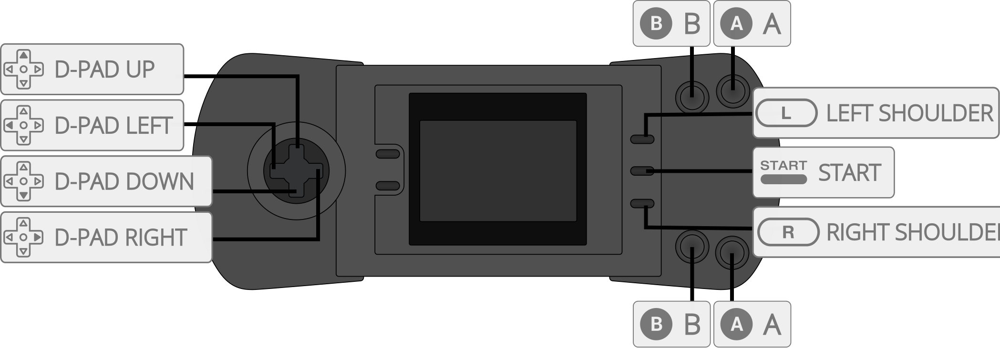

Handy is an Atari Lynx video game system emulator that can be used as a libretro core. Handy was the original name of the Lynx project that was started at Epyx and then finished by Atari.
The Handy core has been authored by
The Handy core is licensed under
A summary of the licenses behind RetroArch and its cores can be found here.
Content that can be loaded by the Handy core have the following file extensions:
RetroArch database(s) that are associated with the Handy core:
Required or optional firmware files go in the frontend's system directory.
| Filename | Description | md5sum |
|---|---|---|
| lynxboot.img | Lynx Boot Image - Required | fcd403db69f54290b51035d82f835e7b |
Frontend-level settings or features that the Handy core respects.
| Feature | Supported |
|---|---|
| Restart | ✔ |
| Screenshots | ✔ |
| Saves | ✕ |
| States | ✔ |
| Rewind | ✔ |
| Netplay (State based) | ✔ (not link-cable emulation) |
| Core Options | ✔ |
| RetroAchievements | ✔ |
| Cheats (Cheats menu) | ✕ |
| Native Cheats | ✕ |
| Controls | ✔ |
| Remapping | ✔ |
| Multi-Mouse | ✕ |
| Rumble | ✕ |
| Sensors | ✕ |
| Camera | ✕ |
| Location | ✕ |
| Subsystem | ✕ |
| Softpatching | ✕ |
| Disk Control | ✕ |
| Username | ✕ |
| Language | ✕ |
| Crop Overscan | ✕ |
| LEDs | ✕ |
The Handy core's directory name is 'Handy'
The Handy core saves/loads to/from these directories.
Frontend's State directory
The Handy core has the following option(s) that can be tweaked from the core options menu. The default setting is bolded.
Settings with (Restart) means that core has to be closed for the new setting to be applied on next launch.
Display rotation [handy_rot] (None/90/240)
Self-explanatory. Need to restart content.
The Handy core supports the following device type(s) in the controls menu, bolded device types are the default for the specified user(s):

| User 1 Remap descriptors | RetroPad Inputs |
|---|---|
| B | |
| Pause | |
| D-Pad Up | |
| D-Pad Down | |
| D-Pad Left | |
| D-Pad Right | |
| A | |
| Option 1 | |
| Option 2 | |
Supported combinations
| Game | Issue |
|---|---|
| RoadBlasters | Graphics glitches. Minor flickering and glitches after starting a race. |